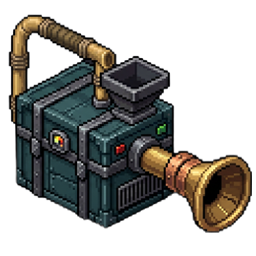
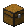

У каждого — своя память.
Два пылесоса не делят настройки, историю выбора и 177 потенциальных ячеек. Всё хранится в NBT отдельного предмета.
Пылесос, который не просто подбирает предметы. Он выбирает добычу, жнёт поле и отталкивает тех, кто подошёл сзади.

Живой 3D-эксперимент: предметы летят к соплу только если проходят фильтр. Сила расширяет конус, «Айрухан» увеличивает дальность. Как в исходном коде, здесь нет магической батарейки.
Он есть в серверном перечислении VacuumFilterMode, но в исходном VacuumScreen нет отдельной кнопки. На стенде показан и подписан отдельно — не выдаём симулятор за экран игры.
Данные принадлежат самому предмету. Переключай экземпляры А и Б: содержимое, сила, фильтр и история сохраняются отдельно в каждом пылесосе. При вставке предметы группируются и сортируются по ID/NBT.

+Один сундук в слоте улучшения открывает +10 ячеек. База — 27. Предел — 177, а не бесконечность.
Доступно 15 сундуков в демонстрацииНовые слоты открываются по 10, но экран показывает только 3 × 9 одновременно. После улучшения прокрути ряды стрелками или колесом над ячейками.
Рецепт из data/zitraksmode/recipes/vacuum.json. Расставь компоненты по схеме. Пустые клетки имеют значение: это фигурный рецепт 3 × 3.
Выбери деталь, затем нажми на клетку. Для бамбука понадобятся две клетки.
Редкое зачарование «Айрухан» I–III добавляет по 5 блоков к дальности за уровень. Пока идёт всасывание, задняя струя отталкивает сущностей.
Задняя струя действует только при включённом пылесосе. Чары подходят только ему; выше III поднять нельзя.
Зрелые растения срезаются и возвращаются к начальной стадии роста. Поставь фильтр «Еда» и включи поток.
Два пылесоса не делят настройки, историю выбора и 177 потенциальных ячеек. Всё хранится в NBT отдельного предмета.
Радиус поиска равен силе + 5 × уровень «Айрухана». Чем выше сила, тем шире сектор подбора перед игроком.
Руда, твёрдые блоки без сущностей, еда, прочее и один выбранный предмет. У поиска есть история последних 10 ID.
Подлинные названия и описания из файла достижений мода; авторский юмор сохранён без правок. Три условия — три награды.